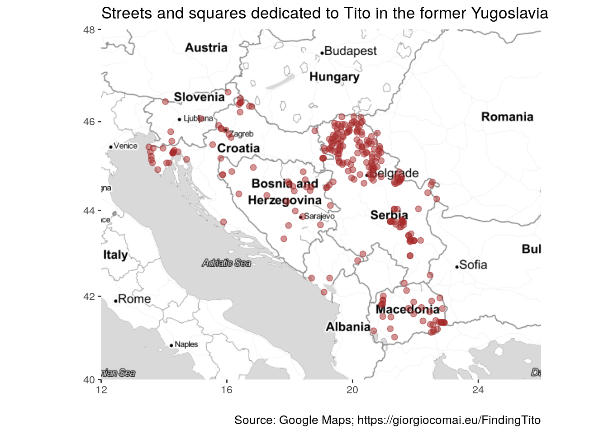
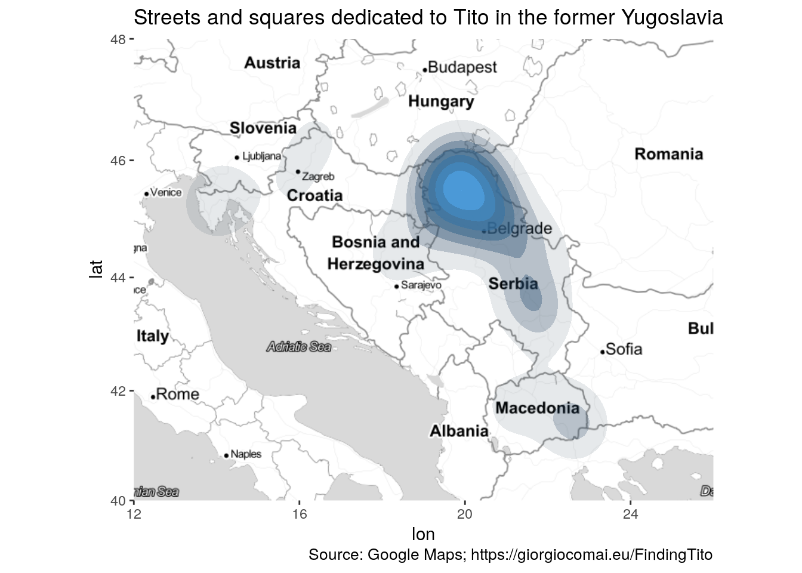
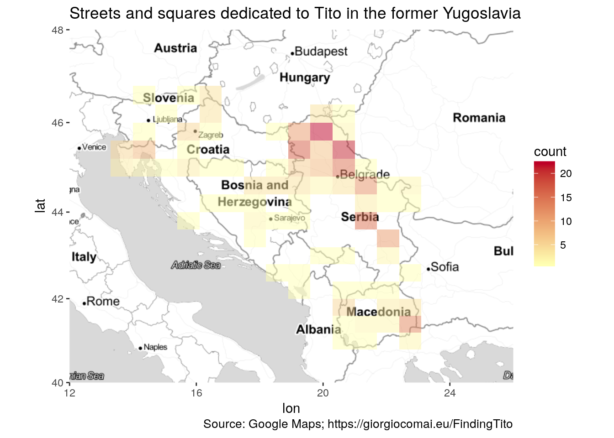
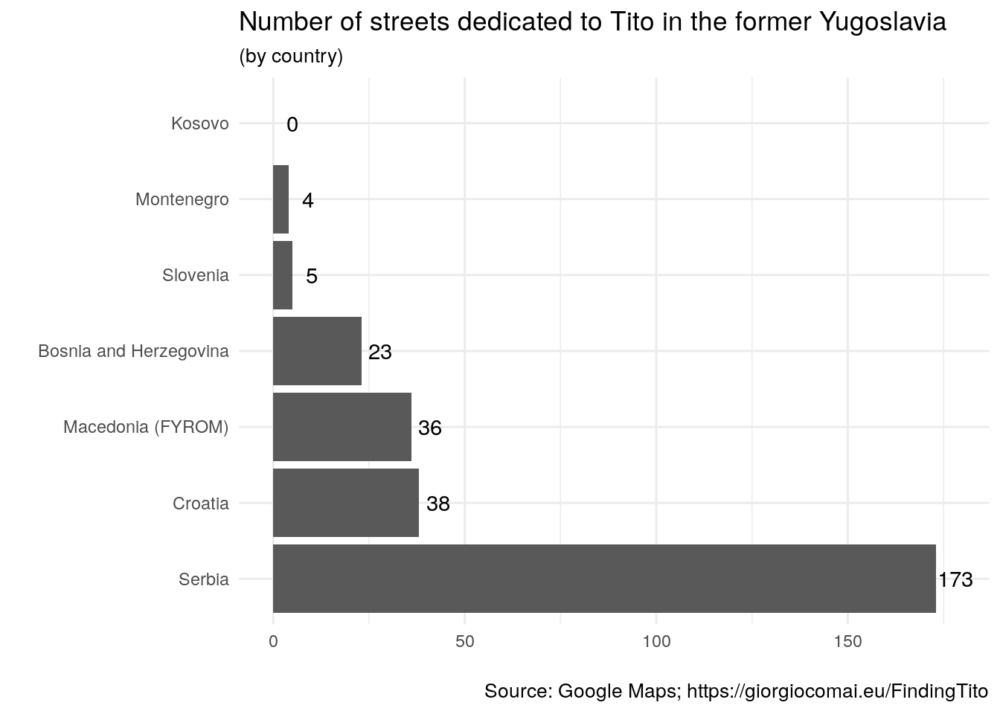

5 Summary of results
In the former Yugoslavia, streets and squares dedicated to Tito are commonplace in some areas (in particular, Istria and Vojvodina) but almost absent in others. The results presented below refer to data found by systematically querying the Google Maps API; OpenStreetMap data proved to be incomplete and partially misleading, as they would not have allowed to identify the area that seems to have the higher density of streets and squares dedicated to Tito, i.e. Vojvodina. Indeed, Vojvodina alone has more than a hundred instances of streets or squares dedicated to Tito.
Also data found via Google Maps may be incomplete, or not completely up to date. Indeed, as it appears also exploring the results on Google Maps there are some instances of streets dedicated to Tito found by OpenStreetMapa that are not found by Google Maps. For consistency, the maps below include only Google Maps data (as of August 2017): they likely offer a meaningful picture of the presence and distribution of streets and squares dedicated to Tito in the former Yugoslavia.
All results can be viewed as an overlay on Google Maps, or in the maps below.
5.1 Tito streets on a map

5.2 Density of Tito streets

5.3 Tito streets by country
